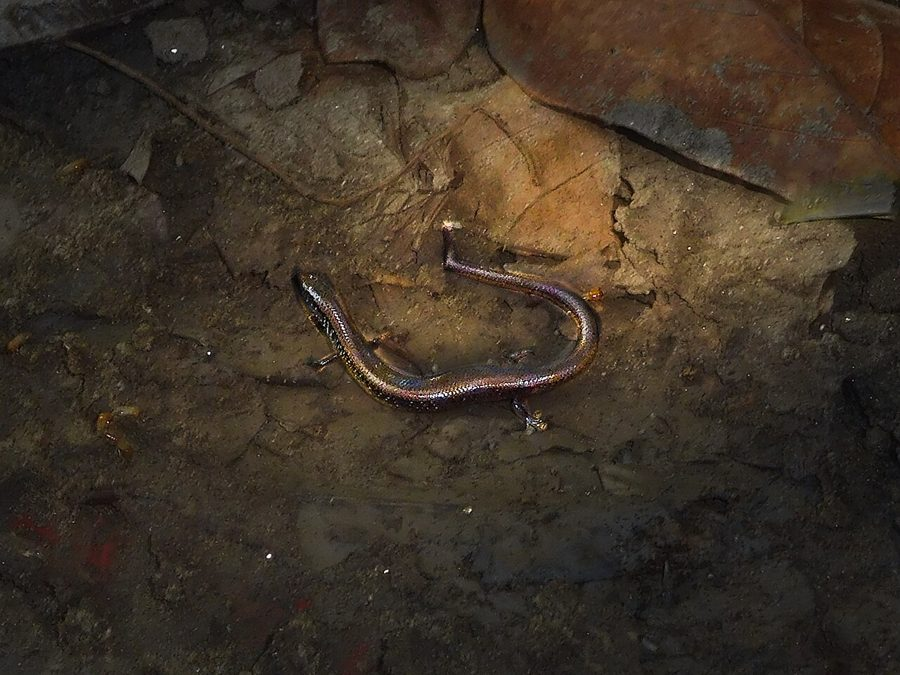

व्हाइट-स्पॉटेड स्किंकWhite-spotted Supple Skink
Riopa albopunctata · Scincidae · REP-0032

- Scientific name वैज्ञानिक नाम
- Riopa albopunctata (Duméril, 1851)
- Family कुल
- Scincidae
- Hindi हिंदी
- व्हाइट-स्पॉटेड स्किंक
- Local names स्थानीय नाम
- white-spotted supple skink, white spotted supple skink, skink
- Status here यहाँ की स्थिति
- native
- Movement आवागमन
- Resident, here all year
- Known from कहाँ दर्ज
- Others have published records from the wider Awadh–Purvanchal plain, none yet from Basti–Ayodhya अवध–पूर्वांचल से दूसरों के प्रकाशित अभिलेख, बस्ती–अयोध्या से अभी नहीं
- IUCN IUCN
- LC
- Review समीक्षा
- audited and independently read
When to look कब देखें
Present all year. साल भर मौजूद।
Uses and possibilities उपयोग और संभावनाएँ
Drawn from the documented uses in the profile below, where each is labelled traditional, current or a research lead. All uses →
व्हाइट-स्पॉटेड स्किंक / White-spotted Supple Skink
Riopa albopunctata (Duméril, 1851) — Scincidae
व्हाइट-स्पॉटेड स्किंक — घास के मैदानों और खुले खेतों में रहने वाली एक छोटी तेज़ छिपकली। चमकदार तराजू वाली, हरे-भूरे रंग की, शरीर पर सफ़ेद बिंदु। कीड़े खाती है; तेजी से दौड़ती है, घास में गायब हो जाती है।
Quick Identification त्वरित पहचान
| Feature | Description |
|---|---|
| Size | 12–18 cm (small skink) |
| Body | Slender, elongate; smooth, shiny scales |
| Coloration | Dark greyish-brown or greenish-brown; white spots on scales |
| Limbs | Short; scales smooth and shiny |
| Tail | Long, tapers gradually; easily detached |
| Scales | Keeled; arranged in regular rows; highly polished |
| Eyes | Small to moderate |
Field tip: A small, shiny, green-brown lizard with white-spotted scales, found running quickly through dry grass and open fields. Very difficult to spot due to cryptic coloration and rapid movement. The white spots are diagnostic when seen. Prefers dry, open habitats.
Morphology आकारिकी
Biometrics (field populations):
| Measurement | Range |
|---|---|
| Snout-vent length (SVL) | 12–18 cm |
| Tail length | 14–22 cm |
| Weight | 8–15 g |
Body structure: Slender, moderately elongate, laterally compressed. Streamlined for rapid movement through dense vegetation.
Scales: Dorsal scales keeled; arranged in regular longitudinal rows. Scales are highly polished and shiny, giving the lizard a glossy appearance. Ventral scales smooth.
Coloration: Dorsal surface greyish-brown, olive-brown, or greenish-brown, matching dry grass. Each dorsal scale bears a white or pale spot or dot, creating the characteristic spotted pattern. Ventral surface white or pale yellow.
Limbs: Short but functional; four digits on fore limbs, five on hind limbs. Clawed.
Tail: Long, gradually tapering. Contains specialized fracture planes; readily detaches if seized by a predator. Regeneration produces a shorter, darker, smoother replacem tail.
Eyes: Small to moderate, with normal movable eyelids.
Behaviour & Ecology व्यवहार और पारिस्थितिकता
A diurnal ground-dwelling insectivore. Forages actively through grass and leaf litter searching for small invertebrates. Uses rapid, erratic movement as primary defense. When threatened, darts away through grass and disappears. Highly cryptic; remains immobile in grass, relying on camouflage. Prefers dry, open habitats with short grass or scattered vegetation. Solitary; males are territorial.
Life Cycle / Phenology जीवन चक्र
| Stage / season | Event |
|---|---|
| March–April | Emergence from winter dormancy; mating |
| April–July | Breeding; females lay eggs in soil |
| Eggs | Clutches of 3–5 eggs; laid in moist soil beneath grass |
| Hatchlings | Emerge July–August; tiny but independent |
| Sexual maturity | 1–1.5 years |
| Lifespan | 4–6 years recorded |
हिंदी: गर्मी में प्रजनन; मिट्टी में अंडे।
Host Plants or Prey आहार
- Small insects: ants, termites, small beetles
- Insect larvae: grasshopper nymphs, lepidopteran caterpillars
- Spiders and small arachnids
- Small millipedes and centipedes
Predators / Natural Enemies शत्रु
- Snakes: Rat snakes, wolf snakes, and grass snakes
- Birds: Crows, mynas, and kestrels
- Carnivorous mammals: Shrews, mongooses
- Ants: Driver ants may overwhelm young skinks
Agricultural / Human Relevance कृषि प्रासंगिकता
Pest control. By consuming large numbers of grasshoppers, termites, and other crop pests, these skinks provide natural pest control in agricultural fields. Beneficial species.
Protection status. Protected under the Wildlife (Protection) Act 1972.
Cultural significance. Generally ignored in folklore; valuable for pest management.
Expected Locally स्थानीय रूप से अपेक्षित
Not a field record. Written from published accounts for eastern Uttar Pradesh. No confirmed local sighting yet — if you have seen it, that is what the atlas needs.
अभी तक स्थानीय पुष्टि नहीं। यह विवरण प्रकाशित स्रोतों से है, किसी अवलोकन से नहीं।
Expected in grasslands, dry fields, and margins of water bodies throughout Basti district. Most active during daytime, particularly in the morning. Difficult to spot due to cryptic coloration and rapid movement through grass. Most active April–October. A photograph or close observation with place, date, and habitat type is a confirmed record.
Distribution वितरण
Global range: Native to tropical South Asia; distributed across the Indian subcontinent.
In India: Found throughout the plains and lower hills where suitable grassland habitat exists.
In Uttar Pradesh: Widespread in eastern plains in open fields and grasslands.
In Basti district / eastern UP: Expected in open grasslands and cultivated areas throughout the district.
Research Questions शोध प्रश्न
Anyone can investigate these | कोई भी इन प्रश्नों की जाँच कर सकता है
- What proportion of their diet consists of grasshoppers vs. other insects? — Stomach content analysis.
- How does their activity vary with time of day and season? — Transect surveys at different times.
- क्या ये स्किंक खेतों में कीटनाशक होने के बाद कम दिखती है? — Pesticide use surveys and populations counts.
- At what tail autotomy rate do they experience predation in open fields? — Mark and recapture, counting regenerate tails.
- How far can a tailless individual travel? — Tracking studies of individual movement.
Similar Species मिलती-जुलती प्रजातियाँ
| Species | How to tell apart | हिंदी |
|---|---|---|
| Other Riopa species | Different spot patterns; geographical distribution | अन्य स्किंक प्रजातियाँ |
Field rule: A small, shiny, green-brown skink with white-spotted scales, running rapidly through dry grass, is a White-spotted Supple Skink.
Taxonomy & Classification वर्गीकरण
Original description. Described by Auguste Duméril in 1851 in Catalogue Méthodique de la Collection des Reptiles du Musée d'Histoire Naturelle de Paris. The epithet albopunctata means "white-spotted." Originally placed in Euprepes; transferred to Riopa by later authors.
Subspecies. Monotypic — no subspecies are currently recognised.
Family and order placement. Scincidae, the skink family; order Squamata. Riopa is a small genus of Asian skinks.
Phylogenetic notes. Riopa albopunctata represents a clade of supple, grass-dwelling skinks adapted to tropical Asian grasslands.
IUCN status rationale. Least Concern (LC). Widespread and abundant in suitable grassland habitat; stable populations where habitat is preserved.
Photo Gallery फोटो गैलरी
Photos needed आवश्यक फोटो
- [ ] Dorsal view showing white-spotted pattern
- [ ] Lateral view of whole individual
- [ ] In grass habitat
- [ ] Close-up of scales and spots
No photos yet — add field photos to media/species/white_spotted_supple_skink/ and run node scripts/sync_photos.js.
References संदर्भ
- Duméril, A. (1851). Catalogue Méthodique de la Collection des Reptiles du Musée d'Histoire Naturelle de Paris. Gide and Baudry, Paris.
- Smith, M.A. (1935). The Fauna of British India: Reptilia and Amphibia. Vol. 2 — Sauria. Taylor & Francis, London.
- Daniel, J.C. (2002). The Book of Indian Reptiles and Amphibians. Bombay Natural History Society, Mumbai.
- Zoological Survey of India (ZSI) — Reptile Fauna of Uttar Pradesh.
- GBIF Occurrence Data — Riopa albopunctata, India (2010–2025).
- IUCN Red List — Riopa albopunctata. IUCN, Cambridge.
Source file: species/fauna/reptiles/white_spotted_supple_skink.md